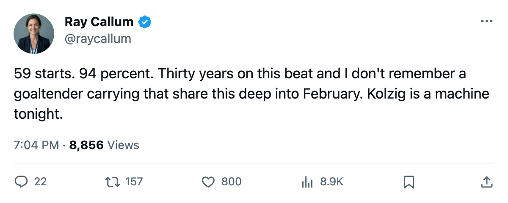

Goalie Watch: Kolzig has started 59 of 63, and nobody has sat the Vezina winner
No goaltender in the league carries a heavier workload. The Capitals' starter faces last-place Montreal tonight.
 Ray CallumSenior correspondent · Home Ice Network
Ray CallumSenior correspondent · Home Ice Network
 Olaf Kolzig87 has started 59 of 63 games. That is 94%, the highest workload share in the league by 4 percentage points over the next-highest. The
Olaf Kolzig87 has started 59 of 63 games. That is 94%, the highest workload share in the league by 4 percentage points over the next-highest. The  Washington Capitals Capitals' Vezina Trophy winner from last season takes the ice tonight against the
Washington Capitals Capitals' Vezina Trophy winner from last season takes the ice tonight against the  Montreal Canadiens Canadiens.
Montreal Canadiens Canadiens.
The next closest starter is  Dominik Hasek86 at 90% (55 of 61), and he was scratched tonight in Detroit's game against Los Angeles. After that, three goaltenders sit at 85%:
Dominik Hasek86 at 90% (55 of 61), and he was scratched tonight in Detroit's game against Los Angeles. After that, three goaltenders sit at 85%:  Evgeni Nabokov90 of
Evgeni Nabokov90 of  San Jose Sharks (53 starts),
San Jose Sharks (53 starts),  Martin Biron88 of
Martin Biron88 of  Buffalo Sabres (50), and
Buffalo Sabres (50), and  Roman Turek86 of
Roman Turek86 of  Calgary Flames (53).
Calgary Flames (53).
Washington sits 4th in the East at 77 points, on a two-game losing streak. The Capitals fell 3-2 to Detroit on February 22 and lost their previous game before that. Montreal has 16 wins in 63 games and sits last in the Northeast division at 50 points. Washington has beaten Montreal twice this season, outscoring the Canadiens 6-4 across those meetings.
Three games in six days
Buffalo Sabres visits Washington on February 26. Then the Capitals travel to  New Jersey Devils on March 1. If Kolzig starts all three, he reaches 62 of 66.
New Jersey Devils on March 1. If Kolzig starts all three, he reaches 62 of 66.
He has been through 3 injury-designated spells this season. None of them carried a named body part in the league's record. He is not on Washington's injured list heading into tonight.
Montreal's  Jose Theodore91 has started 51 of 63 (81%) and is the projected starter. The Canadiens are 8-23 on the road this season.
Jose Theodore91 has started 51 of 63 (81%) and is the projected starter. The Canadiens are 8-23 on the road this season.
Among the league's other top starters,  Tomas Vokoun90 of
Tomas Vokoun90 of  Nashville Predators carries 80% (49 of 61),
Nashville Predators carries 80% (49 of 61),  Martin Brodeur91 of New Jersey Devils sits at 82% (49 of 60), and
Martin Brodeur91 of New Jersey Devils sits at 82% (49 of 60), and  Marty Turco94 of
Marty Turco94 of  Dallas Stars carries 82% (50 of 61). Kolzig has logged 6 more starts than any goaltender in hockey, and there are 21 games left in the Washington schedule.
Dallas Stars carries 82% (50 of 61). Kolzig has logged 6 more starts than any goaltender in hockey, and there are 21 games left in the Washington schedule.
